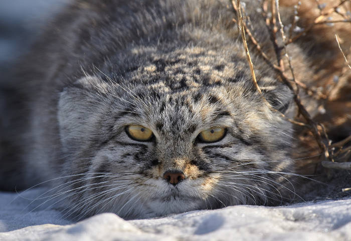

20 декабря 2023, 19:31:12
Этот хищник семейства кошачьих напоминает обычного домашнего котика, но при этом является одним из самых малоизученных животных. Ученые даже точно не знают, сколько манулов осталось в России. Дикие коты на редкость необщительны и загадочны.
Хищник с вечно недовольным выражением морды – манул – занесен в Красные Книги России, Казахстана, Монголии и других стран. Популяция диких котов долгое время уменьшалась, и виной тому человек: манулы гибнут, поедая отравленных грызунов, встречаясь с сельхозтехникой или пастушьими собаками. Попытки разводить диких кошек в зоопарках долгое время были не слишком удачны: в неволе эти звери размножаются неохотно.

По-монгольски «манул» означает «дикий кот». По другой версии, слово имеет тюркские корни и означает «быстрый», хотя медлительному хищнику это определение плохо подходит. Другое название вида – Палласов кот – манулы получили в честь впервые описавшего их ученого Петра Симона Палласа. В России животных также называли степными или каменными кошками.
Всего существует три подвида таких кошачьих – тибетский, закаспийский и сибирский. Все эти манулы занесены в Красные Книги различных стран, хотя в целом исчезновение виду уже не грозит. В России обитают только сибирские манулы.
По мнению ученых, история манулов началась еще 10 — 12 миллионов лет назад. Этот неприветливый котик – современник саблезубого тигра, благополучно доживший до нашего времени. По мнению некоторых фелинологов, дикий манул является прародителем самых пушистых пород кошек – персидских и ангорских. Эта гипотеза пока не нашла подтверждения. Согласно исследованиям ученых, генетически манул ближе к леопарду, чем к домашней кошке. Из мелких кошачьих самый близкий родственник манула – бенгальская кошка.
Немецкий натуралист Петр Симон Паллас был первым, кто описал этого пушистого зверя в 1776 году. Ученый, обнаруживший животное на побережье Каспийского моря, не ограничился кратким описанием манула, дал ему название Felis manul и рассказал о нем в своих заметках. Современное название Otocolobus manul зверек получил в 1858 году. Так манула назвал русский зоолог Николай Северцов. Слово Otocolobus имеет греческие корни и обозначает в буквальном переводе «уродливое ухо». Уродством зоолог счел, вероятно, укороченные уши манула.
В дальнейшем изучение животного продолжилось, но из-за скрытного образа жизни манула было не очень успешным. Ученые смогли больше узнать об этом представителе семейства кошачьих только после того как начали разводить его в зоопарках и устанавливать в местах обитания манулов видеокамеры, фиксирующие манулов в естественной среде обитания. Видео с манулами до сих пор едва ли не единственная возможность понаблюдать за этими скрытными животными.
Все про манула: как выглядит и как живет дикая кошка
Даже беглого взгляда на фото манула достаточно, чтобы увидеть, что это самый пушистый из всех представителей кошачьих. Длинный (до 7 см) и густой (до 9000 волосков на квадратный сантиметр) мех животного имеет неравномерный окрас, оттенок которого зависит от подвида. Сибирские палласовы коты имеют светло-серую шубку, для среднеазиатских характерен рыжеватый мех с красноватыми полосками, а для тибетского – темно-серый с серебристым отливом.
Внешностью и размерами животное напоминает домашнего кота, но лапы у него более короткие и массивные. Длина зверя вместе с хвостом – от 65 до 100 см, а весит манул как обычная кошка, от 2 до 5 кг. Более крупным и тяжелым манул выглядит из-за пушистого густого меха.
Описание манула было бы неполным без рассказа о его морде, которая постоянно сохраняет недовольное выражение – во всяком случае, с человеческой точки зрения. Голова у манула круглая, на щеках растут пучки длинных волос. Маленькие округлые уши широко расставлены и низко посажены, из-за чего кажутся постоянно прижатыми к голове. А глаза, напротив, большие, близко посаженные и высоко расположенные. Они сильно отличаются от глаз домашних котов – желтые, с круглым зрачком, который уменьшается на свету, но не превращается в узкую полоску.
Взгляд у манула очень осмысленный, но довольно неприветливый из-за «насупленных» бровей. Впрочем, это вполне соответствует характеру животного. Не зря даже если манула описывают очень кратно, то обязательно упомянут его недружелюбие, стремление к одиночеству и резко отрицательное отношение к любым контактам с любыми живыми существами, кроме добычи. Даже с представителями противоположного пола эти последовательные интроверты сходятся лишь раз в году.
Самцы обычно крупнее, чем самки: дикий кот манул выглядит более внушительно, чем кошка. А звуки, которые издают эти хищники, напоминают низкое урчание или хриплый лай. Также манулы умеют фыркать, а вот мяукать им не к чему, поскольку этот «язык» домашние кошки изобрели специально для общения с людьми.
В рационе палласова кота преобладают грызуны – полевки, песчанки, суслики, хомяки, пищухи, молодые сурки, мелкие степные зайцы-толаи. По возможности животные лакомятся мелкими птицами, которые устраивают гнезда на земле, и падалью. Летом в рацион входят также насекомые и ягоды.
Хотя коротколапые манулы не умеют быстро бегать, они – отличные охотники. Зверь долго может сидеть в засаде, выжидая подходящий момент, чтобы потом прыгнуть на свою жертву. Изображающие манулов рисунки, сделанные первыми исследователями, не могли зафиксировать этот процесс, но в наше время, когда наблюдение за скрытными каменными котами ведется с помощью автоматических фото- и видеорегистраторов, можно увидеть, как эффективно манулы охотятся.
В феврале-марте манулы, как и домашние коты, задумываются о продолжении рода. В это время между самцами происходят жестокие драки, нередко доходит до кровопролития. Какой манул победит, тому и достанется самка. После спаривания беременная кошка продолжает жить в одиночестве. Через 2 – 2,5 месяца у нее появляются котята.
В помете манула обычно 2 – 6 котят, реже рождается до 10 малышей. Они совершенно беспомощные, но уже покрытые густым теплым мехом. Котята быстро растут, примерно в 10 дней у них открываются глаза, еще через пару недель начинают прорезываться зубы.
Самка манула кормит котят до 8 недель. Уже к 4 месяцам кошка обучает свое потомство самостоятельно добывать еду, к 8 месяцам котята достигают размеров взрослой особи, а еще через 5 – 8 недель покидают мать и начинают жить самостоятельно. По некоторым данным, эти убежденные одиночки покидают родной дом еще раньше, в возрасте 5 – 6 месяцев. Почти 70% котят погибают, так и не дожив до взрослого возраста.
В природе у манула сравнительно мало врагов – это волки, лисы, собаки и снежные леопарды, а также крупные хищные птицы. Также опасность для этих животных представляют паразиты и человек. Собственно, именно из-за деятельности человека численность манулов стремительно сокращалась в XX веке.
Где обитает манул
Ученые не знают точно, сколько манулов в нашей стране, н предполагают, что численность диких котов составляет примерно 3 – 3,7 тысяч особей. Раньше палласовых котов было больше, однако хозяйственная деятельность человека и браконьерство уменьшили ареал обитания осторожных хищников. Манулы в естественной среде обитания стараются держаться подальше от людей, а также пастушьих собак, которые не прочь подзакусить пушистым котиком.
Сейчас в России манулы обитают в Сибири, Красноярском крае, Туве, на Алтае и в Забайкалье. Сравнительно большая популяция манулов в Монголии – там даже разрешена охота на этих хищников. Дикие коты водятся также в Китае, Афганистане, Пакистане, Узбекистане, Казахстане, Туркмении, Таджикистане, Иране, Кашмире, Непале и на Тибете.
В отличие от других животных Красной Книги России манулы не вызывают серьезных опасений с точки зрения полного исчезновения. Всего в мире обитает около 58 тысяч особей. Численность пушистых котов в других странах позволяет надеяться на то, что эти современники саблезубого тигра будут жить и размножаться на воле и дальше.
Где можно увидеть манула
Прочитав краткое описание манула в Красной Книге, многие загораются идеей увидеть этого недружелюбного, но обаятельного зверя своими глазами. К сожалению, это не так-то просто: эти представители семейства кошачьих плохо переносят неволю. Сейчас их научились разводить, но это сопряжено со многими сложностями, в том числе и по причине нелюдимости манула: каждое кормление становится для пушистых котов настоящим стрессом . В европейских зоопарках в 2020 году содержалось всего около сотни хищников.
В зоопарках манулы часто болеют. Дело в том, что в природе эти интроверты ведут одиночный образ жизни, практически не общаясь с другими представителями своего вида, а кроме того, обитают там, где бактерии практически не выживают, поэтому болеют редко. В зоопарках же дикие кошки часто заражаются токсоплазмозом, который тяжело переносят в отличие от домашних питомцев. Особенно подвержены этому заболеванию котята – взрослые особи могут перенести токсоплазмоз бессимптомно, в то время как маленькие манулы часто гибнут из-за него.
Первыми добиться регулярного размножения манулов в неволе смогли сотрудники московского зоопарка. Вот и ответ на вопрос, почему именно манул стал символом этого учреждения. Первые манулы появились в столичном зоопарке еще в 1949 году.
Сейчас в Московском зоопарке живет манул Тимофей. Он переехал в столицу из новосибирского питомника и быстро приобрел популярность среди посетителей. К его вольеру ежедневно стекаются люди, которым хочется посмотреть на этого мрачного, но любопытного котика.
Правда, увидеть манула Тимофея удается лишь немногим счастливчикам: кот предпочитает прятаться в убежищах, наблюдая оттуда за посетителями. Он отлично умеет маскироваться и подолгу сохранять неподвижность, поэтому только самые внимательные и упорные гости зоопарка могут похвастаться тем, что смогли увидеть Тимофея в его вольере.
Можно ли купить котенка манула и держать его дома
Увидев манула на картинке, многие задаются вопросом, нельзя ли завести такого котика дома. В интернете можно найти истории о старушках, выкормивших котеночка, который позднее загрыз нескольких грабителей, защищая дом и престарелую хозяйку.
По мнению зоологов, все это не более чем городские легенды. При желании можно, конечно, купить манула у браконьеров, но поступать так категорически не рекомендуется. И дело не только в том, что подобные сделки незаконны. И даже не в том, что цена манула может составлять десятки тысяч долларов. Просто эти пушистые котики не приручаются. Вообще. Никогда.
История знает немало случаев, когда люди приручали гепардов, тигров и львов. Хотя иногда такие опыты заканчивались трагически, в целом крупные дикие кошки все-таки могут стать ручными. Но домашний манул – это утопия. Ни один дрессировщик, работающий с типграми и другими крупными хищниками, не сможет справиться с этим маленьким агрессивным котом.
Даже если выращивать манула с самого рождения, приручить его не удастся. Едва этот слепой пушистый комочек откроет глаза, он начнет шипеть на людей и при первой же возможности их покинет. А если такой возможности не предоставится, то будет прятаться и при необходимости пускать в ход зубы и когти, но ручным не станет никогда. По этой причине нет никакого смысла интересоваться ценой котенка манула в зоопарке или питомнике – животные не подходят для домашнего разведения и не продаются.
Как бы ни были привлекательны эти пушистые мизантропы с осмысленным взглядом, с идеей их содержания дома придется попрощаться. Хотя манул и похож на мягкую игрушку – это зубастый хищник с непростым характером. Все, что остается поклонникам этого вида – смотреть на котов манулов на фото или часами стоять у вольера, где сидит в засаде этот маленький, но очень самостоятельный необщительный хищник.